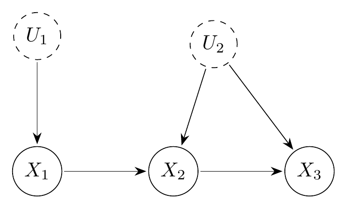

Direct enumeration of the hyperarc encoding
Source:vignettes/hyperarc-example.Rmd
hyperarc-example.Rmd
library(igraph)
#>
#> Attaching package: 'igraph'
#> The following objects are masked from 'package:stats':
#>
#> decompose, spectrum
#> The following object is masked from 'package:base':
#>
#> union
library(causaloptim)
library(rcdd)
#> If you want correct answers, use rational arithmetic.
#> See the Warnings sections in help pages for
#> functions that do computational geometry.Introduction
When a causal estimand is not identifiable, one can compute sharp bounds by optimizing over all latent distributions compatible with the observed data. Sachs et al. (2023) reparameterize the causal model via response functions, yielding a local encoding: a linear program (LP) in variables. Shridharan and Iyengar (2023) propose an alternative hyperarc encoding with variables that gives the same sharp bounds.
This vignette accompanies Markham et al. (2026) and works through the running example from that paper: the canonical instrumental variable DAG with , , and an internal edge . We enumerate directly—in topological order, without ever materialising —display all 16 candidate hyperarcs (marking the 4 invalid ones), and verify that both encodings give the same sharp bounds.
Setup
g <- graph_from_literal(X1 -+ X2, X2 -+ X3, Ur -+ X2:X3) |> initialize_graph()
left_vars <- names(V(g)[leftside == 1 & latent == 0])
right_vars <- names(V(g)[leftside == 0 & latent == 0])The running example is the confounded DAG below, with (the instrument), (outcomes), a latent common cause of and , and a latent parent of .

Confounded DAG. Dashed nodes (, ) are latent.
Local encoding:
card_R <- prod(sapply(right_vars, function(j) {
nv <- V(g)[j]$nvals
pa <- setdiff(names(neighbors(g, j, mode = "in")), "Ur")
if (length(pa) == 0) nv else nv ^ prod(V(g)[pa]$nvals)
}))
cat("|R| =", card_R, "\n")
#> |R| = 16
## or
cmg <- create_causalmodel(g, prob.form = list(out = c("X2", "X3"), cond = "X1"))
ncol(cmg$counterfactual_constraints$numeric$R)
#> [1] 16Direct enumeration of valid hyperarcs
A valid hyperarc is a map whose output at each node is constant within every equivalence class of left-side configurations that share the same values of ’s observed parents. We enumerate by processing in topological order: at each node we determine those classes from the assignments already made, then independently choose a constant value per class.
enumerate_hyperarcs <- function(graph) {
obs <- V(graph)[latent == 0]
left <- obs[obs$leftside == 1]
right <- obs[obs$leftside == 0]
lvects <- as.matrix(do.call(expand.grid,
lapply(left$nvals, function(n) 0:(n - 1))
))
colnames(lvects) <- names(left)
nl <- nrow(lvects)
right_topo <- names(topo_sort(graph))[
names(topo_sort(graph)) %in% names(right)
]
H <- list(matrix(nrow = nl, ncol = 0, dimnames = list(NULL, character(0))))
for (j in right_topo) {
nv_j <- V(graph)[j]$nvals
pa_obs <- names(neighbors(graph, j, mode = "in")) |>
intersect(c(names(left), names(right)))
H_new <- list()
for (h in H) {
if (length(pa_obs) == 0) {
groups <- rep(1L, nl)
} else {
pmat <- sapply(pa_obs, function(p)
if (p %in% names(left)) lvects[, p] else h[, p]
)
if (!is.matrix(pmat)) pmat <- matrix(pmat, ncol = 1)
groups <- as.integer(factor(apply(pmat, 1, paste, collapse = "_")))
}
combos <- as.matrix(expand.grid(rep(list(0:(nv_j - 1)), max(groups))))
for (i in seq_len(nrow(combos))) {
vals <- as.integer(combos[i, ][groups])
h_new <- cbind(h, matrix(vals, ncol = 1, dimnames = list(NULL, j)))
H_new <- c(H_new, list(h_new))
}
}
H <- H_new
}
lapply(H, function(h) cbind(as.data.frame(lvects), as.data.frame(h)))
}All 16 candidate hyperarcs (elements of ), with validity indicated, are:
| h | X2(X1=0) | X2(X1=1) | X3(X1=0) | X3(X1=1) | Valid |
|---|---|---|---|---|---|
| 1 | 0 | 0 | 0 | 0 | ✓ |
| 2 | 1 | 0 | 0 | 0 | ✓ |
| 3 | 0 | 0 | 1 | 0 | ✗ |
| 4 | 1 | 0 | 1 | 0 | ✓ |
| 5 | 0 | 1 | 0 | 0 | ✓ |
| 6 | 1 | 1 | 0 | 0 | ✓ |
| 7 | 0 | 1 | 1 | 0 | ✓ |
| 8 | 1 | 1 | 1 | 0 | ✗ |
| 9 | 0 | 0 | 0 | 1 | ✗ |
| 10 | 1 | 0 | 0 | 1 | ✓ |
| 11 | 0 | 0 | 1 | 1 | ✓ |
| 12 | 1 | 0 | 1 | 1 | ✓ |
| 13 | 0 | 1 | 0 | 1 | ✓ |
| 14 | 1 | 1 | 0 | 1 | ✗ |
| 15 | 0 | 1 | 1 | 1 | ✓ |
| 16 | 1 | 1 | 1 | 1 | ✓ |
The 4 invalid candidates (rows 3, 8, 9, 14) are exactly those in which takes the same value for both inputs yet differs. When is constant, the response function value at the unrealized input is observationally irrelevant: distinct elements of that disagree only there produce identical observable distributions. The local encoding still counts them as separate response functions (contributing 4 redundant elements to ), while the hyperarc encoding omits them, giving .
Note on constructing . Shridharan and Iyengar (2023) define a hyperarc as valid if (their Definition 4) and give a locally checkable condition (their Theorem 5) for validity that avoids iterating over . can be constructed by iterating over all candidate maps and retain those satisfying the condition. In general, can be much larger than (when right-side nodes depend on only a subset of ), so iterating over the candidate set can be costly. The topological enumeration above avoids this: valid hyperarcs are built node by node in topological order, so no invalid candidate is ever constructed.
Verifying identical sharp bounds
Both and describe the same observable polytope, so they yield the same sharp bounds for any causal query. We verify this for .
Local encoding bounds via causaloptim
mod <- analyze_graph(g, constraints = NULL,
effectt = "p{X3(X2 = 1) = 1}")
local_result <- optimize_effect_2(mod)
local_result
#> lower bound =
#> MAX {
#> 1 - p00_0 - p10_0 - p01_0,
#> 1 - p00_1 - p10_0 - p10_1 - p01_0,
#> 1 - p00_1 - p10_1 - p01_1,
#> 1 - p00_0 - p10_0 - p10_1 - p01_1
#> }
#> ----------------------------------------
#> upper bound =
#> MIN {
#> 1 - p10_0,
#> 2 - p00_1 - p10_0 - p10_1 - p01_0,
#> 2 - p00_0 - p10_0 - p10_1 - p01_1,
#> 1 - p10_1
#> }
#>
#> A function to compute the bounds for a given set of probabilities is available in the x$bounds_function element.Hyperarc bounds
We build the constraint matrix mapping hyperarc weights to the
observable conditional probabilities
,
choose the objective vectors for the query, and call
rcdd::scdd for vertex enumeration.
The lower-bound objective selects hyperarcs under which is certain when (i.e., some value maps to ). The upper-bound objective selects hyperarcs under which is impossible when . These are the extreme valid coefficient assignments and yield sharp bounds.
rpaste <- function(x) apply(as.matrix(x), 1, paste, collapse = "_")
# All observable (X1, X2, X3) configurations
obs_configs <- as.matrix(do.call(expand.grid,
lapply(V(g)[latent == 0]$nvals, function(n) 0:(n - 1))
))
colnames(obs_configs) <- names(V(g)[latent == 0])
Pc <- rpaste(obs_configs)
# p-parameter names p{X2}{X3}_{X1}
p_names <- apply(obs_configs, 1, function(r)
sprintf("p%s_%s",
paste(r[right_vars], collapse = ""),
paste(r[left_vars], collapse = "")))
# Constraint matrix: rows = (normalisation, observables), cols = hyperarcs
# Row 1: sum q_h = 1; Row obs+1: sum_{h: h(x1)=(x2,x3)} q_h = p(x2,x3|x1)
nl <- nrow(H[[1]])
H_long <- do.call(rbind, H)
H_strings <- matrix(rpaste(H_long), nrow = length(H), ncol = nl, byrow = TRUE)
Rmat <- 1.0 * Reduce(`|`, lapply(seq_len(nl), function(k)
outer(Pc, H_strings[, k], FUN = "==")))
Rmat <- rbind(rep(1, length(H)), Rmat)
# Objective: 1 for hyperarcs consistent with X3=1 when X2=1
obj_lower <- sapply(H, function(h) any(h$X2 == 1 & h$X3 == 1))
obj_upper <- sapply(H, function(h) !any(h$X2 == 1 & h$X3 == 0))
eval_objective <- function(p, y) {
# Inlined from causaloptim's internal evaluate_objective (c1_num = rbind(1)):
# y[1] is the constant term; y[-1] are coefficients for the p-parameters.
const <- as.character(y[1])
terms <- mapply(function(v, nm) {
if (v == 0) ""
else if (v == 1) paste0(" + ", nm)
else if (v == -1) paste0(" - ", nm)
else if (v > 0) paste0(" + ", v, nm)
else paste0(" - ", abs(v), nm)
}, y[-1], p)
expr <- paste0(const, paste(terms, collapse = ""))
if (y[1] == 0 && nchar(expr) > 1)
expr <- trimws(substr(expr, 4, nchar(expr)))
trimws(expr)
}
enumerate_vertices <- function(Rmat, obj, p) {
hrep <- makeH(a1 = t(Rmat), b1 = 1.0 * obj)
vrep <- scdd(input = hrep)
verts <- vrep$output[vrep$output[, 1] == 0 & vrep$output[, 2] == 1,
-c(1, 2), drop = FALSE]
apply(verts, 1, function(y) eval_objective(p, y))
}
hyp_lower <- enumerate_vertices( Rmat, obj_lower, p_names)
hyp_upper <- enumerate_vertices(-Rmat, -1.0 * obj_upper, p_names)Symbolic comparison
The two encodings produce the same observable polytope, so vertex
enumeration returns the same set of linear forms in the observed
probabilities. optimize_effect_2 returns the individual
vertex expressions in its expressions field, so we extract
them directly for element-wise comparison.
local_lb <- sort(trimws(local_result$expressions$lower))
local_ub <- sort(trimws(local_result$expressions$upper))
hyp_lb <- sort(trimws(hyp_lower))
hyp_ub <- sort(trimws(hyp_upper))
cat("Lower-bound expressions identical:", setequal(local_lb, hyp_lb), "\n")
#> Lower-bound expressions identical: TRUE
cat("Upper-bound expressions identical:", setequal(local_ub, hyp_ub), "\n")
#> Upper-bound expressions identical: TRUEThe shared lower-bound expressions are:
cat(paste(local_lb, collapse = "\n"), "\n")
#> 1 - p00_0 - p10_0 - p01_0
#> 1 - p00_0 - p10_0 - p10_1 - p01_1
#> 1 - p00_1 - p10_0 - p10_1 - p01_0
#> 1 - p00_1 - p10_1 - p01_1That is, the sharp lower bound on is the maximum of these linear forms over the observed distribution , and the two encodings produce exactly this same set.
References
Markham, A., Gabriel, E. E., and Sachs, M. C. (2026). Computational and algebraic questions in causal inference. In International Congress on Mathematical Software (ICMS), Lecture Notes in Computer Science. TODO: add DOI/URL
Sachs, M. C., Jonzon, G., Sjölander, A., and Gabriel, E. E. (2023). A general method for deriving tight symbolic bounds on causal effects. Journal of Computational and Graphical Statistics, 32(2), 567–576. https://doi.org/10.1080/10618600.2022.2071905
Shridharan, M. and Iyengar, G. (2023). Scalable computation of causal bounds. Journal of Machine Learning Research, 24(237), 1–35. http://jmlr.org/papers/v24/22-1081.html